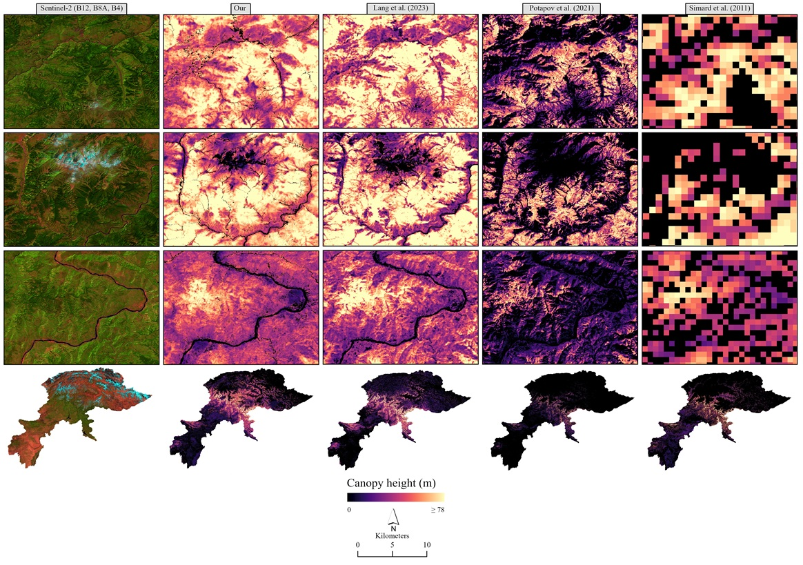

GeoScape Analytics Lab
GSAL
About GSAL
The GeoScape Analytics Lab (GSAL) advances research and training in GIS, remote sensing, GeoAI, and spatial data analytics for environment, urban planning, agriculture, climate, and disaster risk. It supports students and researchers in solving real-world geospatial problems using satellite data, mapping tools, and machine learning.
Our research focuses on geospatial science, with a strong emphasis on GIS and satellite remote sensing for addressing environmental and urban challenges. We work on satellite image analysis, land cover change detection, and spatial modeling, using GeoAI and multi-source Earth observation data to study landscape dynamics and support spatial decision-making.
Increasingly, we integrate machine learning and cloud-based geospatial analytics to scale these efforts, enabling applications in forestry, climate resilience, sustainable resource management, and data-driven urban planning.
Key Focus Areas
Research Areas
Forest & Ecosystem Mapping
Forest fragmentation, canopy height, aboveground biomass, and biodiversity assessment using multi-source remote sensing data.
GeoAI & Deep Learning
Convolutional neural networks, multi-modal learning, and retrieval-augmented models for geospatial applications.
Climate & Disaster Risk
Landslide susceptibility, flood hazard mapping, and climate-driven habitat change using spatial modeling.
Urban & Land Use Analysis
Urban sprawl monitoring, heat island dynamics, land cover change detection, and sustainable urban planning.
Air Quality & Public Health
Geospatial modelling of air pollutants, COPD clusters, and health equity using satellite-derived environmental data.
Agriculture & Food Security
Crop type mapping, field boundary segmentation, and land suitability analysis using SAR and optical time-series.
Spatial Ecology & SDM
Species distribution modelling (MaxEnt), soundscape mapping, and biodiversity monitoring across mountain ecosystems.
Water Resources
Groundwater potential delineation, water quality assessment, and streamflow trend analysis in Pakistan's river basins.
People
Publications & Activities
-
 CVPR Workshop, 2026A unified multimodal GeoAI framework that learns shared representations from satellite imagery, audio, and text to predict and map realistic soundscapes anywhere on Earth.
CVPR Workshop, 2026A unified multimodal GeoAI framework that learns shared representations from satellite imagery, audio, and text to predict and map realistic soundscapes anywhere on Earth. -

International Journal of Applied Earth Observation and Geoinformation, 2025A 10 m canopy height map for Pakistan's western Himalayas produced by fusing GEDI LiDAR and Sentinel-2 data with a U-Net CNN. -
 Environmental Monitoring and Assessment, 2025Sentinel-5P data reveals how COVID-19 lockdowns affected key air pollutants across Punjab — strong drop in NO₂ and mixed trends in CO, SO₂, and HCHO.
Environmental Monitoring and Assessment, 2025Sentinel-5P data reveals how COVID-19 lockdowns affected key air pollutants across Punjab — strong drop in NO₂ and mixed trends in CO, SO₂, and HCHO. -
 CVPR, 2025A retrieval-augmented strategy for multi-resolution geo-embeddings that estimates visual features of a location by aggregating features from similar-looking places.
CVPR, 2025A retrieval-augmented strategy for multi-resolution geo-embeddings that estimates visual features of a location by aggregating features from similar-looking places. -
 AAAI, 2025FTW — the largest global dataset for crop field boundary segmentation — advances ML models for agricultural monitoring across four continents.
AAAI, 2025FTW — the largest global dataset for crop field boundary segmentation — advances ML models for agricultural monitoring across four continents. -
 Journal of Public Health, 2025Review finding that only 10% of AI-driven urban health studies explicitly considered spatial inequities — highlighting a critical gap in the field.
Journal of Public Health, 2025Review finding that only 10% of AI-driven urban health studies explicitly considered spatial inequities — highlighting a critical gap in the field. -
 WACV, 2025Multimodal models for ecological tasks covering six modalities: ground-level image, geographic location, satellite image, text, audio, and environmental features.
WACV, 2025Multimodal models for ecological tasks covering six modalities: ground-level image, geographic location, satellite image, text, audio, and environmental features. -
 Environmental Monitoring and Assessment, 2025Three decades of Landsat imagery reveal forest decline, increased fragmentation, and conservation hotspots in Azad Jammu and Kashmir.
Environmental Monitoring and Assessment, 2025Three decades of Landsat imagery reveal forest decline, increased fragmentation, and conservation hotspots in Azad Jammu and Kashmir. -
 ACM Multimedia, 2024A probabilistic, multi-scale embedding space connecting audio, text, and overhead imagery for dynamic soundscape mapping with uncertainty estimates.
ACM Multimedia, 2024A probabilistic, multi-scale embedding space connecting audio, text, and overhead imagery for dynamic soundscape mapping with uncertainty estimates. -
 Environmental Monitoring and Assessment, 2024Spatial scan statistics and machine learning reveal pollution-linked COPD clusters in Pakistan, highlighting urgent air quality intervention needs.
Environmental Monitoring and Assessment, 2024Spatial scan statistics and machine learning reveal pollution-linked COPD clusters in Pakistan, highlighting urgent air quality intervention needs. -
 Sat2Cap: Mapping Fine-Grained Textual Descriptions from Satellite Images 🏆 Best Paper AwardCVPR Workshop, 2024Weakly supervised framework for zero-shot mapping that learns textual concepts from satellite imagery via contrastive alignment.
Sat2Cap: Mapping Fine-Grained Textual Descriptions from Satellite Images 🏆 Best Paper AwardCVPR Workshop, 2024Weakly supervised framework for zero-shot mapping that learns textual concepts from satellite imagery via contrastive alignment. -
 IEEE IGARSS, 2024GeoBind aligns text, image, and audio into a shared embedding space using satellite imagery, enabling versatile multimodal geographic reasoning.
IEEE IGARSS, 2024GeoBind aligns text, image, and audio into a shared embedding space using satellite imagery, enabling versatile multimodal geographic reasoning. -
 Impact Assessment of Land Cover and Land Use Changes on Soil Erosion Changes (2005–2015) in PakistanLand Degradation & Development, 2021RUSLE-based assessment of soil erosion dynamics across Pakistan (2005–2015), revealing intensified erosion driven by land use changes.
Impact Assessment of Land Cover and Land Use Changes on Soil Erosion Changes (2005–2015) in PakistanLand Degradation & Development, 2021RUSLE-based assessment of soil erosion dynamics across Pakistan (2005–2015), revealing intensified erosion driven by land use changes. -
 Forests, 2021Synthesis of 73 studies (1993–2021) on forest mapping in Pakistan, highlighting limitations and needs for advanced tools to support REDD⁺.
Forests, 2021Synthesis of 73 studies (1993–2021) on forest mapping in Pakistan, highlighting limitations and needs for advanced tools to support REDD⁺. -
 Advances in Space Research, 2021Combining Sentinel-1 SAR and Sentinel-2 optical time-series with random forest achieves 97% accuracy in crop type mapping.
Advances in Space Research, 2021Combining Sentinel-1 SAR and Sentinel-2 optical time-series with random forest achieves 97% accuracy in crop type mapping. -
 In Computers in Earth and Environmental Sciences, 2022GEE and CART classification map urban sprawl, LST, and land cover change in Lahore (1990–2017), revealing rapid urban growth and rising temperatures.
In Computers in Earth and Environmental Sciences, 2022GEE and CART classification map urban sprawl, LST, and land cover change in Lahore (1990–2017), revealing rapid urban growth and rising temperatures.


Contact GSAL
geoscapeanalyticslab@gmail.com
Institute of Geography, University of the Punjab, Lahore, Pakistan